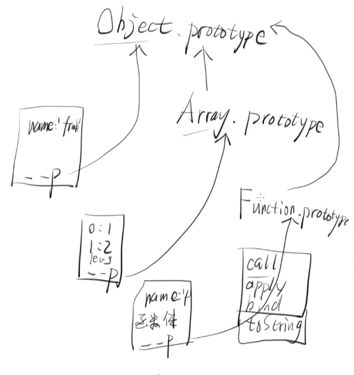
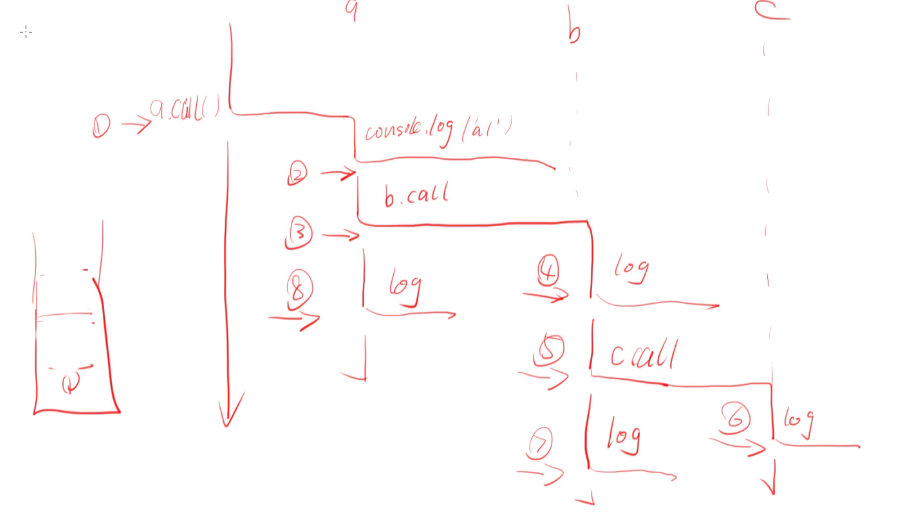
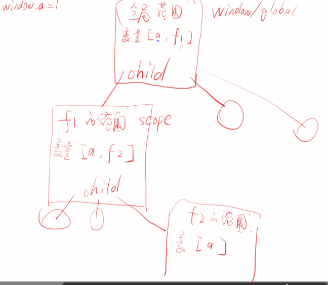

函数的声明方式
具名函数
function x(input1, input2) {
return undefined;
};
x.toString(); //以及其他7种方法匿名函数
var x;
x = function(input1, input2) {
return undefined;
};变量加具名函数
var x = function y (input1, input2) {
return undefined;
};
console.log(y); // 这个 y 是 undefined
但是function y(...)
console.log(y) // 这个是可以的
这个是不一致造成的，因为前者的作用域在函数体内
- window.Function 函数对象(并不常用)
f = new Function('x', 'y', 'return x+y');
以下是例子var n = 1;
f = new Function('x', 'y', 'return x+' + n + '+y');
那么 f(1, 2) 的值是多少呢，就是 4
- 箭头函数表示
f = (x, y) => {return x+y}
也可以表示为f = (x, y) => x+y
比如n2 = n => n*n
n2(4) // 16
一个小知识点，所有的函数都个属性叫做 namefunction f(){}
f.name // 'f'
然鹅匿名函数var f2 = function(){}
f2.name // 'f2'
然鹅var f3 = function f4(){}
f3.name // 'f4'
然鹅f5 = new Function('x', 'y', 'return x+y')
f5.name // 'anonymous' 这里居然是匿名...
调用函数
function f(x, y) { |
比如一个求面积的函数function getTriArea(width, height) {
var n = width * height;
var m = n / 2;
return m;
};
getTriArea(4, 3); // 6
那么在内存里面，函数是怎么存的呢, 试着用纯对象来模拟函数var f = {}
f.name = 'f'
f.params = ['x', 'y'] // 函数参数
f.fbody = 'console.log(1)' // 函数体
f.call = function() {
return window.eval(f.fbody);
}
// 调用以上代码
f.call() // 1
f 是这个对象，而 f.call() 是执行这个函数体的代码
可以执行代码的对象就叫做函数
JS 有 7 种数据类型
number string boolean null undefined symbol object
日常复习的原型结构图

一般而言，有两种调用方法f(1, 2)
f.call(undefined, 1, 2)
只有下面那种才是真正的调用function f(x, y) {
return x + y
}
f.call(undefined, 1, 2) // 参数从第二个开始传
this 和 arguments
以上面的例子f.call(undefined, 1, 2) // 3
-----------------------------
| | |
+ + +
this [1, 2] arguments
1. call 的第一个参数可以用 this 得到
2. call 的后面的参数可以用 arguments 得到
在普通模式下，如果传入的第一个参数是 undefined 或不传,那么 this 的
值就是 window，如果用严格模式 'use strict'，那么 this 的
值就是 undefined, this 就是 call 的第一个参数
什么是伪数组,就是 __proto__ 中没有指向 Array.prototype
call stack 调用栈
以下是一个较为复杂的例子function a() {
console.log('a1')
b()
console.log('a2')
return 'a'
}
function b() {
cosole.log('b1')
c()
console.log('b2')
return 'b'
}
function c() {
console.log('c')
return 'c'
}
a.call()
console.log('end')
// a1 b1 c b2 a2
下图是对上图的解释

再一个例子,用递归function sum(n) {
if (n === 1) {
return 1
} else {
// return n + sum(n-1)
return n + sum.call(undefined, n-1)
}
}
sum.call(undefined, 5) // 1 + 2 + 3 + 4 + 5
作用域
var a = 1 |
见下图

本质上还是就近原则
以下对代码进行变形var a = 1
function f1() {
// 这里进行代码的改动
f2.call()
console.log(a)
var a = 2 // 变量提升,先把声明提上去
function f2() {
var a = 3
console.log(a)
}
}
f1.call()
console.log(a)
浏览器在执行代码时，会先找变量，后执行程序逻辑,以上代码在进行
变量提升后就相当于var a = 1
function f1() {
function f2() {
var a = 3
console.log(a)
}
var a
f2.call()
console.log(a) // undefined
a = 2 // 变量提升,先把声明提上去
}
f1.call()
console.log(a)
又一个例子var a = 1
function f1() {
console.log(a)
var a = 2
f4.call()
}
function f4() {
console.log(a) // a = ??
}
f1.call()
console.log(a)
以上代码做变量提升后为var a = 1
function f1() {
var a;
console.log(a) // 这里的 a 是 undefined
a = 2
f4.call()
}
function f4() {
console.log(a) // 这里的 a 是 1 ,因为这个 a 跟 f4 这个作用域有关，或者跟它的父作用域有关
}
f1.call()
console.log(a)
再再再一个例子var a = 1
function f1() {
var a;
console.log(a) // 这里的 a 是 undefined
a = 2
f4.call()
}
function f4() {
console.log(a) // 下面的 ??? 代码，使得这里的 a = 2
}
// ???
a = 2 // 这里修改了 a 的值
f1.call()
console.log(a)
再再再再一个例子<ul>
<li>选项1</li>
<li>选项2</li>
<li>选项3</li>
<li>选项4</li>
<li>选项5</li>
<li>选项6</li>
</ul>
var liTags
var i
liTags = document.querySelector('li')
for (i = 0; i < liTags.length; i++) {
liTags[i].onclick = function() {
console.log(i) // 一个小时之后
}
}
// for 循环之后，i 就是 6
console.log(i)
为什么是这样呢，一个”合理”的解释是，在执行 onclick 函数之前，这个 i 已经跑完了 for 循环了。 function 里面的 i 会跑去寻找它父作用域的已经声明并且赋值过的 i，由于程序运行的速度很快，我们可以理解为，在执行 function 里面的函数时，此时 i 已经变成 6 了
闭包
如果一个函数使用了范围外的值，那么这个(函数 + 这个变量)就叫闭包var a = 1
function f4() {
console.log(a)
}
注意
/######################################/ |